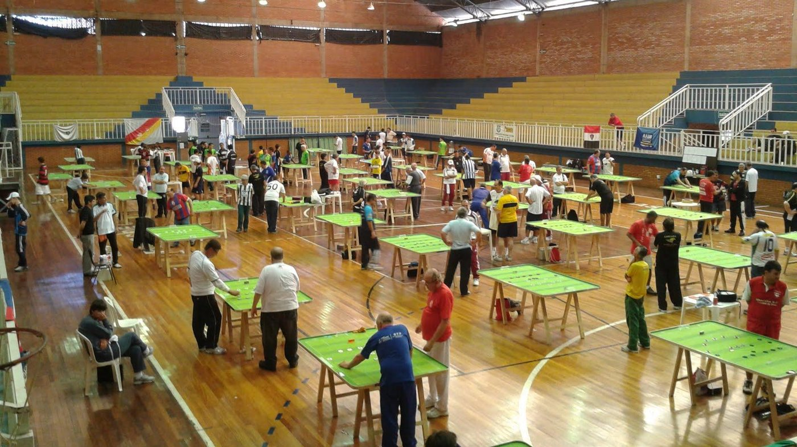

dados = FileAttachment("../dados/brasileiro.json").json()
edicoes = dados.edicoes
linhas = {
const colunas = dados.linhas;
const nomes = Object.keys(colunas);
return colunas.ano.map((_, i) => Object.fromEntries(nomes.map((k) => [k, colunas[k][i]])));
}
// Eixo do tempo: as edições e também os anos sem campeonato (2020 e 2021), que ficam em branco
linhaDoTempo = [...edicoes, ...dados.sem_campeonato].sort((a, b) => a.ano - b.ano)
rotulos = linhaDoTempo.map((e) => e.rotulo)
edicaoDoAno = new Map(edicoes.map((e) => [e.ano, e]))
ultimoAno = d3.max(edicoes, (e) => e.ano)
categorias = ["Adulto", "Master", "Sub-18", "Sub-15"]
ufsPrincipais = ["SP", "PR", "RJ", "PE", "SC", "RS", "GO"]
num = (x, casas = 0) => x.toLocaleString("pt-BR", {minimumFractionDigits: casas, maximumFractionDigits: casas})
pct = (x) => num(100 * x, 1) + "%"
rotuloBotonista = (b) => `${b.nome} (${b.ufo ?? "sem UF"})`
// Recortes que dependem do filtro geral
categoriasDoFiltro = ({"Todas": categorias, "Sub-15 + Sub-18": ["Sub-18", "Sub-15"]})[categoria] ?? [categoria]
linhasCat = linhas.filter((d) => categoriasDoFiltro.includes(d.cat))
variasCategorias = categoriasDoFiltro.length > 1
textoCategoria = categoria === "Todas" ? "todas as categorias"
: categoria === "Sub-15 + Sub-18" ? "as categorias Sub-15 e Sub-18 somadas"
: `a categoria ${categoria}`
function grafico(opcoes, {largo = false} = {}) {
const figura = Plot.plot({
width: largo ? Math.max(width, 780) : Math.min(width, 760),
style: {fontSize: "11px", background: "transparent", overflow: "visible"},
opacity: {type: "identity"},
...opcoes
});
return html`<div class="fm-rolagem ${largo ? "fm-largo" : ""}">${figura}</div>`;
}
dica = ({fill: "var(--fm-superficie)", stroke: "var(--fm-suave)", fontSize: 12, lineHeight: 1.25})
eixoEdicoes = ({type: "band", domain: rotulos, label: null, tickRotate: -55, tickSize: 3, padding: 0.18})
// Eixo só com os anos a partir do primeiro que tem o dado (evita metade do gráfico vazia)
function eixoAPartirDe(rotulosComDado) {
const inicio = d3.min(rotulosComDado, (r) => rotulos.indexOf(r)) ?? 0;
return {...eixoEdicoes, domain: rotulos.slice(inicio)};
}
function empilhar(registros, chaveGrupo, dominio) {
return d3.rollups(registros, (v) => v.length, (d) => d.ano, chaveGrupo)
.flatMap(([ano, grupos]) => {
const edicao = edicaoDoAno.get(ano);
const total = d3.sum(grupos, (g) => g[1]);
return grupos.map(([grupo, n]) => ({ano, rotulo: edicao.rotulo, parcial: edicao.parcial, grupo, n, total}));
})
.sort((a, b) => a.ano - b.ano || dominio.indexOf(a.grupo) - dominio.indexOf(b.grupo));
}
function barrasEmpilhadas(registros, dominio, cores, rotuloY) {
return grafico({
height: 430, marginBottom: 150, marginLeft: 64, marginTop: 24,
x: eixoEdicoes,
y: {label: rotuloY, grid: true},
color: {domain: dominio, range: cores, legend: true},
marks: [
Plot.barY(registros, {
x: "rotulo", y: "n", fill: "grupo", order: null,
fillOpacity: (d) => (d.parcial ? 0.45 : 1),
insetTop: 1, tip: dica,
title: (d) => `${d.rotulo}\n${d.grupo}: ${num(d.n)}\nTotal: ${num(d.total)}${d.parcial ? "\nClassificação publicada só em parte" : ""}`
}),
Plot.ruleY([0])
]
}, {largo: true});
}
function carreiras(registros) {
return d3.rollups(registros, (v) => {
const anos = [...new Set(v.map((d) => d.ano))].sort(d3.ascending);
return {id: v[0].id, nome: v[0].nome, ufo: v[0].ufo, anos, n: anos.length, sequencia: maiorSequencia(anos)};
}, (d) => d.id).map((d) => d[1]);
}
// Maior sequência de edições seguidas. Edições com classificação parcial não interrompem a
// sequência (o botonista pode ter jogado sem aparecer na lista), mas só contam se ele aparece.
function maiorSequencia(anos) {
const presente = new Set(anos);
let melhor = {n: 0}, atual = null;
for (const e of edicoes) {
if (presente.has(e.ano)) {
atual = atual ? {n: atual.n + 1, inicio: atual.inicio, fim: e.ano} : {n: 1, inicio: e.ano, fim: e.ano};
if (atual.n > melhor.n) melhor = atual;
} else if (!e.parcial) atual = null;
}
return melhor;
}
function top10(lista, valor) {
const ordenada = d3.sort(lista, (d) => -valor(d), (d) => d.nome);
const top = ordenada.slice(0, 10);
const corte = top.length ? valor(top[top.length - 1]) : 0;
const empatadosFora = ordenada.slice(10).filter((d) => valor(d) === corte).length;
return {top, corte, empatadosFora};
}
function ranking(itens, {valor, rotulo, dica: textoDica, cor = "var(--fm-s1)", rotuloX}) {
return grafico({
height: 34 * itens.length + 50, marginLeft: width < 500 ? 150 : 200, marginRight: 40,
x: {label: rotuloX, grid: true, tickFormat: (d) => (Number.isInteger(d) ? d : "")},
y: {domain: itens.map(rotulo), label: null, tickSize: 0},
marks: [
Plot.barX(itens, {y: rotulo, x: valor, fill: cor, insetTop: 3, insetBottom: 3, tip: dica, title: textoDica}),
Plot.text(itens, {y: rotulo, x: valor, text: (d) => num(valor(d)), dx: 6, textAnchor: "start", fontWeight: 600}),
Plot.ruleX([0])
]
});
}
notaEmpate = (r, unidade) => r.empatadosFora
? html`<p class="fm-nota">${r.empatadosFora === 1 ? "Outro botonista também tem" : `Outros ${r.empatadosFora} botonistas também têm`} ${r.corte} ${unidade} e ${r.empatadosFora === 1 ? "ficou" : "ficaram"} fora da lista pela ordem alfabética.</p>`
: html``Em 1989, 93 botonistas se reuniram em São Paulo para o primeiro Campeonato Brasileiro Individual de Futebol de Mesa na regra 12 Toques. Desde então foram 35 edições (só não houve campeonato em 2020 e 2021, por causa da pandemia). Esta página mostra como o campeonato mudou ao longo desses anos: quantos jogam, quantos gols saem, quem aparece mais, quem ganhou e de onde vêm os botonistas.

Use o filtro abaixo para ver tudo por categoria — ele vale para a página inteira.
Participantes ano a ano
Seis botonistas jogaram duas categorias na mesma edição e contam uma vez em cada uma: Faoro (SP, 1997), Rogério (PR, 1998), Robertinho (PR, 2000) e Pedro (PR, 2003), no Adulto e no Sub-18; Bruno (PR, 2005) e Vinícius (SP, 2006), no Adulto e no Sub-15.
Média de gols por partida
Quem mais jogou o Brasileiro
Top 10 em número de participações
Top 10 em participações seguidas
A trajetória dos campeões
Quem mais venceu
A campanha do campeão, ano a ano
Aproveitamento = pontos ÷ (3 × jogos). Passe o mouse (ou toque) em um ponto do gráfico para ver quem foi o campeão e a campanha dele. A UF é a que o campeão defendia naquele ano. Estatísticas só existem a partir de 2002 (em 2002 sem o número de jogos; empates e derrotas a partir de 2006); 2008 e 2009 não têm estatísticas.
Os estados no Brasileiro
Participantes por estado, ano a ano
Títulos por estado, ano a ano
Onde o Brasileiro já foi disputado
Critérios adotados no relatório
Categorias
- As categorias que existiram em uma única edição foram reunidas com a mais próxima: o Sub-20 (2008) entra no Sub-18 e o Infantil (1994) entra no Sub-15. Em 2008 não houve Sub-18 e em 1994 ainda não havia Sub-15, então não há sobreposição.
- O filtro “Sub-15 + Sub-18” soma as duas categorias de base.
Participantes
- Conta-se cada linha da classificação final. Seis botonistas jogaram duas categorias na mesma edição e aparecem uma vez em cada uma: Faoro (SP, 1997), Rogério (PR, 1998), Robertinho (PR, 2000) e Pedro (PR, 2003), no Adulto e no Sub-18; Bruno (PR, 2005) e Vinícius (SP, 2006), no Adulto e no Sub-15. Nos rankings de participações, cada edição conta uma única vez por pessoa.
- Em 1991, 1992, 1993, 1994, 1996 e 1999 o histórico publica só parte da classificação. Esses anos são marcados como incompletos quando a classificação tem menos de 90% dos participantes informados pela organização ou menos de 60 nomes.
- Não houve campeonato em 2020 e 2021, por causa da pandemia. Esses anos aparecem no eixo dos gráficos, sem dados.
Divisões e títulos
- As divisões mudaram de nome (Ouro, Prata, Bronze, Extra e Copa → 1ª a 5ª Divisão). A comparação é feita pelo nível da divisão no ano: nível 1 é a principal (Série Ouro, 1ª Divisão ou divisão única).
- Título = 1º lugar na divisão principal da categoria. Quando o filtro reúne mais de uma categoria, os títulos de todas elas têm o mesmo peso e são somados.
Gols e aproveitamento
- Média de gols por partida = soma dos gols pró ÷ número de partidas (soma dos jogos de todos os botonistas ÷ 2).
- Aproveitamento = pontos ÷ (3 × jogos).
- Só entram os anos em que o histórico traz os números. Nada é calculado ou estimado quando a informação não existe; resultados por WO ficam como foram publicados.
Sequências
- Participação seguida = edições consecutivas do campeonato. 2019 e 2022 são consecutivas, porque não houve campeonato em 2020 e 2021.
- Nos anos com classificação incompleta, a ausência do nome não interrompe a sequência (o botonista pode ter jogado sem aparecer na lista), mas o ano só é somado se o nome aparece.
Pessoas e estados
- Cada botonista é identificado por um código (nome padronizado + estado de estreia), para acompanhar a mesma pessoa mesmo quando o nome é impresso de formas diferentes ou ela muda de estado. A identificação é automática e pode ter erros, principalmente entre homônimos.
- “Estado que defendia no ano” é a UF impressa na classificação daquela edição. “Estado de origem” é a UF da primeira participação do botonista no Brasileiro — o histórico não informa o estado de nascimento.
- 70 linhas não têm UF no histórico (por exemplo em 1997 e em tabelas de base de 2002) e entram em “Outros”.
Encontrou algo errado? Avise por aqui ou deixe um comentário no fim da página — as correções são feitas na base de dados e aparecem aqui na atualização seguinte.
Referências
- História do Campeonato Brasileiro 12 Toques – 3ª edição, documento em PDF com as classificações finais de 1989 a 2025, de onde vêm todos os dados e a foto desta página. Está disponível na página de documentos históricos da CBFM (Confederação Brasileira de Futebol de Mesa).
- Planilha Excel com a base completa: classificação de todas as edições, campeonatos, verificações de qualidade e dicionário das colunas. ****- Base de dados estruturada e código de extração: as regras de leitura do PDF, as correções manuais e as verificações de qualidade.
- Padronização dos nomes dos botonistas e dos clubes (de-para).